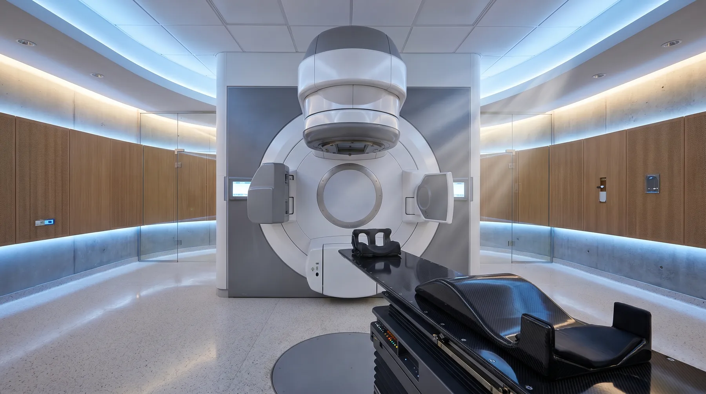
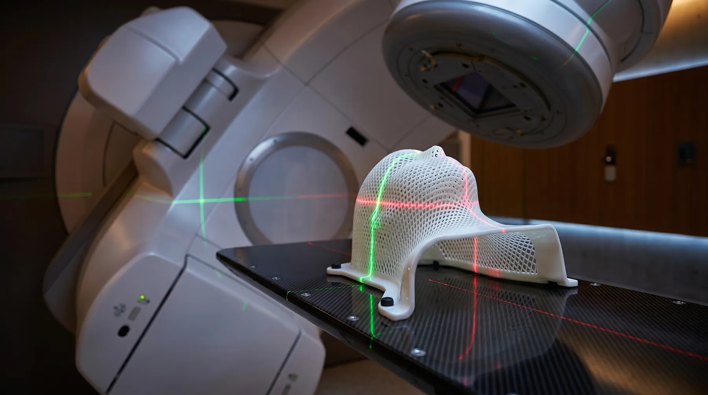
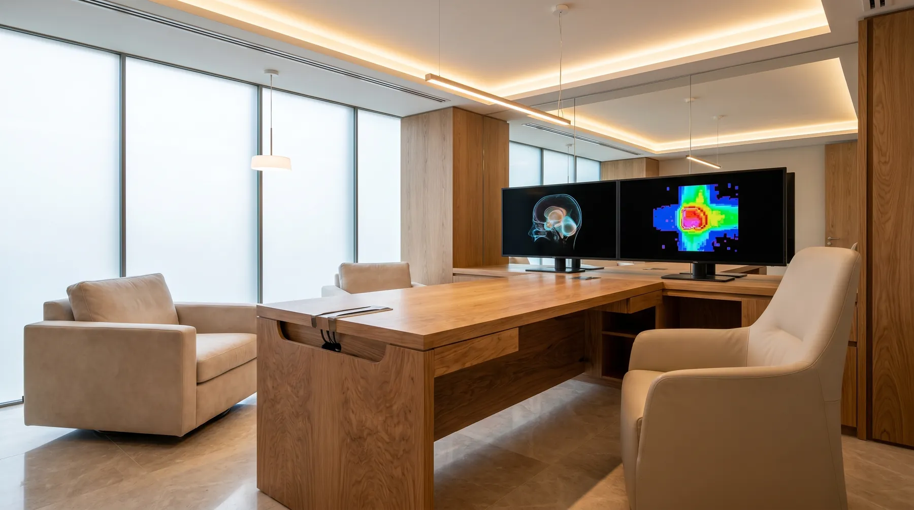
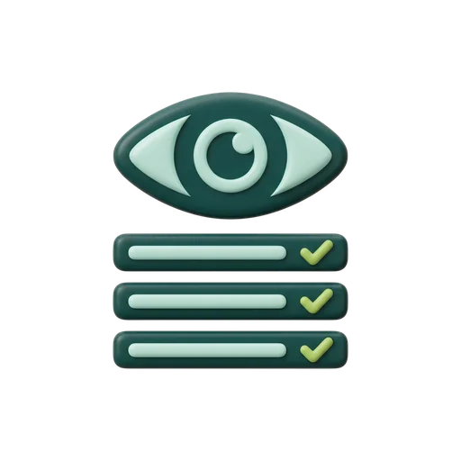

Vega, agente de citación
Contesta cada llamada y cada WhatsApp y llena tu agenda, a cualquier hora del día.
Ver ficha
Instalamos agentes de IA en centros de radiodiagnóstico, radioterapia y física médica: atienden cada llamada, llenan tu agenda, preparan a tus pacientes y documentan tu QA. Menos tarea repetitiva para tu equipo, más tiempo para el paciente.
Piensa en un empleado digital con nombre propio, una única misión y unas tareas concretas. No es un chatbot que contesta de todo: Vega solo se ocupa de que ninguna llamada se pierda y Clara, de que el archivo de calidad esté siempre al día. Trabajan dentro de las herramientas que tu centro ya usa, no toman ninguna decisión clínica y avisan a tu equipo en cuanto algo requiere una persona.
Uno llena la agenda, otro documenta el QA, otro cuida a tus derivadores. Nada de asistentes genéricos que hacen de todo un poco.
Se conecta a tu agenda y a tus canales reales: teléfono, WhatsApp, web. Tu centro no cambia de programa ni de forma de trabajar.
Lo clínico y lo delicado pasa a una persona, con todo el contexto. Cada acción queda registrada y puedes revisarla cuando quieras.
Cada uno se ocupa de una parte del trabajo repetitivo. Tu equipo decide; los agentes ejecutan.
Contesta cada llamada y cada WhatsApp y llena tu agenda, a cualquier hora del día.
Ver ficha
Le explica a cada paciente cómo prepararse, para que la prueba salga bien a la primera.
Ver fichaAcompaña al paciente en cada sesión de radioterapia y avisa a enfermería si algo va mal.
Ver ficha
Mantiene al día al médico que deriva, para que confíe y te mande más pacientes.
Ver fichaOrdena y guarda toda la documentación de calidad, lista para cualquier inspección.
Ver fichaConsigue reseñas y hace que más pacientes te encuentren en tu zona.
Ver fichaEl mismo sistema de agentes, ajustado al flujo, al vocabulario y a las personas de cada sector. Elige el tuyo y conoce a su equipo.
Inviertes en equipos de primer nivel para tus pacientes; nosotros invertimos en proteger sus datos a la misma altura. Los agentes corren sobre estaciones de IA de grado profesional que instalamos en tu centro y procesan en local. El cumplimiento no es un anexo del contrato: es la arquitectura del sistema.
Los agentes se ejecutan sobre estaciones de IA de grado profesional instaladas en tu propia red. La inferencia con datos clínicos sensibles ocurre en local, sin depender de APIs en la nube.
Tu centro mantiene el control del dato. Local primero: lo que deba salir permanece en infraestructura europea. Sin usar datos clínicos para entrenar modelos de terceros.
Tratamiento conforme a RGPD y LOPDGDD, contrato de encargado de tratamiento y coordinación con tu DPD desde la fase de diseño.

Cada acción de cada agente queda registrada: qué hizo, cuándo, con qué dato y quién lo supervisó. Auditable en cualquier momento.
Los agentes no toman decisiones clínicas. Todo lo sanitario escala a tu equipo; lo administrativo opera con límites explícitos.
El procesamiento local es una decisión de arquitectura, no un sello automático. Acordamos contigo los controles de seguridad, el cifrado y el protocolo de supervisión antes de tratar ningún dato.
Cuéntanos cómo trabaja hoy tu servicio de imagen, radioterapia o física médica. En dos semanas te devolvemos un mapa de flujos y un plan de agentes priorizado por impacto. Sin coste y sin compromiso.